4. Alios Command Set Usage¶
4.1. System Information¶
4.1.1. help¶
This command prints a list of all AliOS commands and briefly describes the purpose of each command.
--> help --> ================ AliOS Things Command List ============== --> help : print this --> reboot : reboot system --> proc_codec : codec info --> proc_rc : rc info --> proc_jpege : jpeg encode info --> proc_h264e : h264 encode info --> proc_h265e : h265 encode info --> proc_venc : venc info --> proc_vdec : vdec info --> proc_ai : audio info --> proc_ao : ao info --> proc_mipi_rx : proc mipi rx
4.1.2. reboot¶
Reboot the AliOS system; the Linux system is rebooted as well.
4.1.3. ccs¶
- console cli console show, Displays the console interface content.
--> ccs --> -------- console show ----------- --> id name att --> 1 cli-uart 0 c
4.1.4. sysver¶
- Displays the system kernel version.
--> sysver --> kernel version :12000
4.1.5. time¶
- Displays the number of milliseconds elapsed since system startup.
--> time --> UP time 263888 ms
4.1.6. msleep¶
Sleeps for the specified number of milliseconds. The system reboots after sleeping for 2000 ms.
--> msleep 2000 --> #系统休眠2000ms后重启
4.1.7. f¶
- Runs a function; the function name must follow f.
--> f --> para error
4.1.8. devname¶
- Prints the name of the device on the board. The device is a CV181x series EVB.
--> devname --> device name: cv181xc_evb
4.1.9. err2cli¶
- Switches the system from the panic state to the console.
--> err2cli 0 --> set panic_runto_cli flag:0x0 --> err2cli 1 --> set panic_runto_cli flag:0x21314916
4.2. Process Information¶
4.2.1. Multimedia Processes¶
4.2.1.1. proc_vb¶
This command records the current buffer usage of the VB module (VB: Video Block).
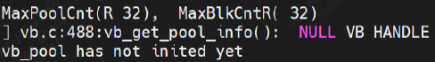
4.2.1.2. proc_sys¶
This command records the current usage of the SYS module.
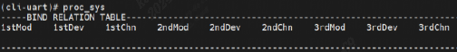
4.2.1.3. proc_vi_dbg¶
This command prints VI process debug information.
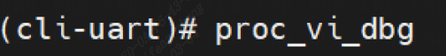
4.2.1.4. proc_vi¶
This command records the attribute configuration and status information of the current video input device and channel.
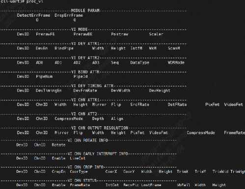
moduleParameters:
VI MODE (VI mode)
VI DEV ATTR1 (VI device attributes)
VI DEV ATTR2 (VI device attributes)
VI BIND ATTR (VI binding attributes)
VI DEV TIMING ATTR (VI timing attributes)
VI CHN ATTR1 (VI channel attributes)
VI CHN OUTPUT RESOLUTION (VI channel output resolution)
VI CHN ROTATE INFO (VI channel rotation information)
VI CHN EARLY INTERRUPT INFO (VI channel interrupt information)
VI CHN CROP INFO (VI channel crop information)
VI CHN STATUS (VI channel status)
4.2.1.5. proc_gdc¶
This command records recently completed GDC tasks, the task with the longest recent duration, and accumulated historical information.
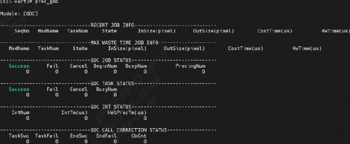
4.2.1.6. proc_mipi_rx¶
This command displays information about the mipi_rx process.
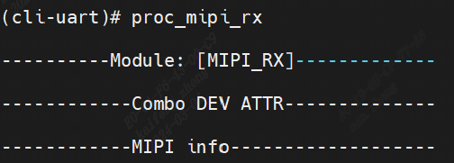
4.2.1.7. proc_vo¶
This command records the current VO usage and attribute configuration, including device, video-layer, and channel status.
Used to obtain VO usage status dynamically for debugging and testing.
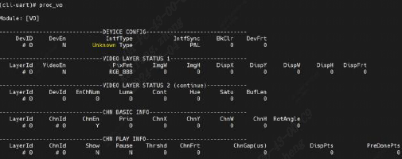
4.2.1.8. proc_rgn¶
This command records current region resource information.
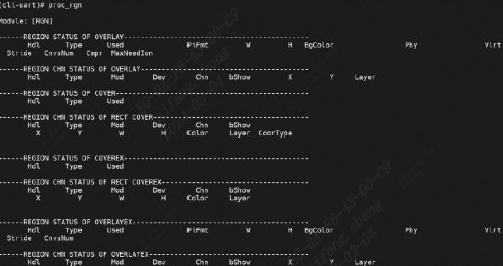
4.2.1.9. proc_codec¶
This command displays encoder and decoder information.
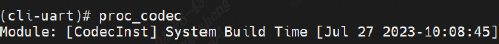
4.2.1.10. proc_vdec¶
This command displays video decoder information.
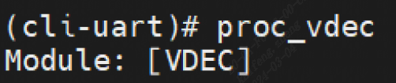
4.2.1.11. proc_rc¶
This command displays current encoding bit rate control information.
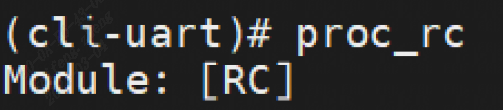
4.2.1.12. proc_jpege¶
This command displays the encoding attribute status of each channel during JPEG encoding.
4.2.1.13. proc_h264e¶
This command displays H.264 video encoding attribute configuration and status information.
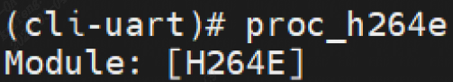
4.2.1.14. proc_h265e¶
This command displays H.265 video encoding attribute configuration and status information.
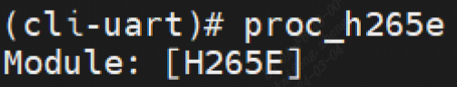
4.2.1.15. proc_venc¶
This command displays current video encoding attribute configuration and status information.
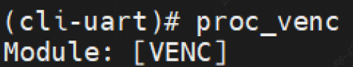
4.2.1.16. testMedia_switch_pipeline¶
This command tests media pipeline switching.
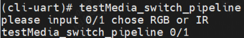
4.2.1.17. testMedia_video_Deinit¶
This command tests media video resource release.
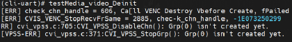
4.2.1.18. testMedia_video_init¶
This command tests media video initialization.
4.2.1.19. dump_isp_pqgram¶
This command displays dump_isp parameter information.
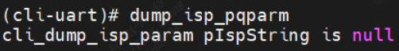
4.2.1.20. proc_log¶
This command displays the current debug level of each module.
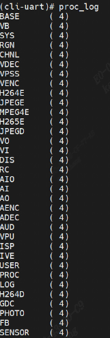
4.2.2. ipcm Process¶
4.2.2.1. ipcm_dbg¶
This command prints inter-core communication debug information.
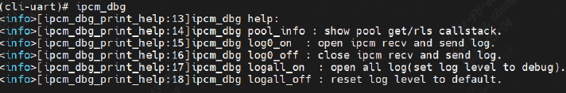
4.2.2.2. ipcm_dbg pool_info¶
This command displays inter-core communication buffer-pool usage.
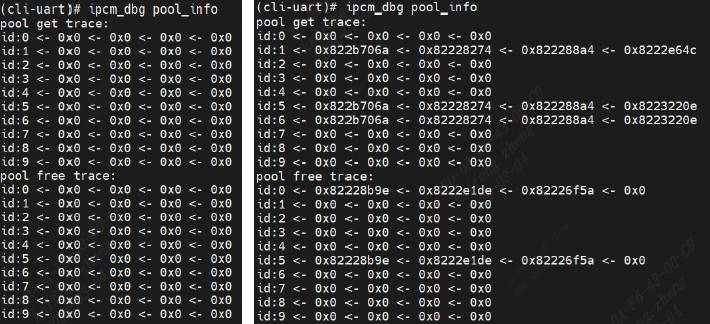
4.2.2.3. ipcm_dbg log0_on¶
This command enables the first ipcm debug log.
4.2.2.4. ipcm_dbg log0_off¶
This command disables the first ipcm debug log.
4.2.2.5. ipcm_dbg logall_on¶
This command enables all ipcm debug logs.
4.2.2.6. ipcm_dbg logall_off¶
This command disables all ipcm debug logs.
4.2.3. Overall Process Information¶
4.2.3.1. tasklist¶
This command prints the process list.
- ::
- –> tasklist
–> ——————————————————————————– –> Name ID State Prio StackSize MinFreesize Runtime Candidate –> ——————————————————————————– –> dyn_mem_proc_task 1 PEND 6 4096 3368 1031 N –> idle_task 2 RDY 61 4288 3720 141756526 N –> DEFAULT-WORKQUEUE 3 PEND 20 4096 3432 153 N –> timer_task 4 PEND 30 3840 3112 58990 N –> cpu_stats 5 SLP 60 2640 2016 50717 N –> app_task 6 SLP 32 8192 4168 206587 N –> cli-uart 7 RDY 60 8192 6392 444838 Y –> heartbeat 8 SLP 27 1024 400 62195 N –> _isp_post_thread 9 PEND 17 4096 3344 164 N –> cvitask_isp_pre 10 PEND 17 4096 2896 117 N –> cvitask_isp_err 11 PEND 17 4096 3344 118 N –> gdc_job_worker 12 PEND 17 4096 3200 58340 N –> MediaMsg 13 PEND 16 103424 101416 45291 N –> workq_thread 14 PEND 22 4096 3344 56578 N –> workq_thread 15 PEND 22 4096 3344 35171 N –> workq_thread 16 PEND 22 4096 3344 24530 N –> workq_thread 17 PEND 22 4096 3344 38924 N –> anon proc 18 PEND 32 8192 7504 14625 N –> ——————————————————————————–
Name is the task name
ID is the task ID
State is the current task state
Prio is the priority
StackSize is the stack space in MB
inFreesize is the minimum free block size
Runtime is the runtime
4.2.3.2. taskbt¶
This command displays the task call stack by task ID.
- ::
- –> taskbt
–> task_btn <taskname>
- –> taskbt 6
–> task name : app_task –> ========== Call stack ========== –> backtrace : 0x8220150A –> backtrace : 0x822EFD16 –> backtrace : 0x82220822 –> backtrace : ^task entry^ –> ========== End ==========
- –> taskbt 7
–> task name : cli-uart –> ========== Call stack ========== –> backtrace : 0x823FC1C0 –> Status of task is ‘Running’, Can not backtrace! –> ========== End ==========
4.2.3.3. taskbtn¶
This command displays the task call stack by task name.
--> taskbtn --> task_btn <taskname> --> taskbtn cli-uart --> ========== Call stack ========== --> backtrace : 0x8221CD40 --> Status of task is 'Running', Can not backtrace! --> ========== End ========== --> taskbtn app_task --> ========== Call stack ========== --> backtrace : 0x8220150A --> backtrace : 0x822EFD16 --> backtrace : 0x82220822 --> backtrace : ^task entry^ --> ========== End ==========
Parameters:
Name: task name
ID: Task ID
State: Current task state
Priorio: priority
StackSize: stack space
MinFreesize: Minimum free block size
Runtime: runtime
4.2.4. CPU Information¶
4.2.4.1. cpuusage¶
This command is used to View CPU usage; the value is updated in real time.
--> cpuusage --> ----------------------- --> CPU usage : 0.17% --> --------------------------- --> Name %CPU --> --------------------------- --> dyn_mem_proc_task 0.00 --> idle_task 99.83 --> DEFAULT-WORKQUEUE 0.00 --> timer_task 0.00 --> cpu_stats 0.00 --> app_task 0.00 --> cli-uart 0.00 --> heartbeat 0.00 --> _isp_post_thread 0.00 --> cvitask_isp_pre 0.00 --> cvitask_isp_err 0.00 --> gdc_job_worker 0.00 --> MediaMsg 0.00 --> workq_thread 0.00 --> workq_thread 0.00 --> workq_thread 0.00 --> workq_thread 0.00 --> anon proc 0.00 --> cpuusage 0.16 --> ---------------------------
4.3. Memory Information¶
4.3.1. View Memory Information¶
4.3.1.1. p¶
- This command prints physical memory contents.
- ::
- –> p
–> p <addr> <nunits> <width> –> addr : address to display –> nunits: number of units to display (default is 16) –> width : width of unit, 1/2/4 (default is 4)
p<addr> <nunits> <width>
--> p 0x80000000 64 2 --> 0x80000000: 0433 0005 84b3 0005 0933 0006 00ef 59c0 --> 0x80000010: 0833 0005 0533 0004 85b3 0004 0633 0009 --> 0x80000020: 58fd 0463 0118 1d63 0b05 0817 0000 0813 --> 0x80000030: 3c68 4885 282f 0118 1463 0a08 0297 0000 --> 0x80000040: 8293 3c42 0317 0000 0313 fbc3 b023 0062 --> 0x80000050: 0297 0000 8293 3b82 b283 0002 03b3 4053 --> 0x80000060: 0e17 0000 0e13 388e 3023 007e 6297 0001 --> 0x80000070: 8293 4342 7317 0001 0313 4943 8363 0662
4.3.1.2. p _offcheck¶
This command prints physical memory contents without checking the validity of the memory address
- ::
- –> p 0x800000
–> p <addr> <nunits> <width> –> addr : address to display –> nunits: number of units to display (default is 16) –> width : width of unit, 1/2/4 (default is 4) –> –> #usepprintinvalidaddress, willpromptprintpprintphysicaladdressusemethod, usep_offcheck printinvalidaddresswillenterdumpstatus. –> (0x82402410): 0x20202020 0x20202020 0x19191919 0x19191919 –> (0x82402420): 0x18181818 0x18181818 0x09090909 0x09090909 –> (0x82402430): 0x08080808 0x08080808 0x8221FCCC 0x00000000 –> !!!!!!!!!! dump end !!!!!!!!!!
4.3.2. Modify Memory Information¶
4.3.2.1. m¶
This command modifies physical memory contents.
- ::
- –> m
–> m <addr> <value> <width> –> addr : address to modify –> value : new value (default is 0) –> width : width of unit, 1/2/4 (default is 4)
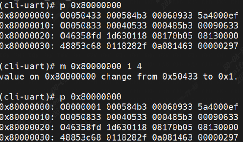
First parameter: physical address
Second parameter: new value to write (defaults to 0 if omitted)
Third parameter: number of bytes to modify (1/2/4; defaults to 4 bytes if omitted)
The m 0x80000000 1 4 command on the left changes the contents at address 0x80000000 to 1, writing 4 bytes.
After modification, the contents at that address change from 00050433 to 00000001
4.3.3. Memory Debug Information¶
4.3.3.1. ddumpsys¶
This command displays system debug information.
4.3.3.2. dumpsys mm¶
This command displays system debug memory information.
--> dumpsys mm --> --------------------------------------------------------------------------- --> [HEAP]| TotalSz | FreeSz | UsedSz | MinFreeSz | MaxFreeBlkSz | --> | 0x005066C0 | 0x004AE580 | 0x00058140 | 0x004AE100 | 0x004AE580 | --> --------------------------------------------------------------------------- --> --------------------------------------------------------------------------- --> [HEAP]| TotalSz | FreeSz | UsedSz | MinFreeSz | MaxFreeBlkSz | --> | 0x015A0000 | 0x00E3BCC0 | 0x00764340 | 0x00E3BCC0 | 0x00E3BCC0 | --> ---------------------------------------------------------------------------
4.3.3.3. dumpsys mm_info¶
This command displays AliOS memory partition information.
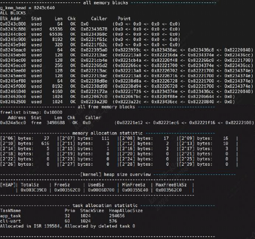
4.3.3.4. dumpsys mm_info_resv¶
- This command displays AliOS resv partition memory information.
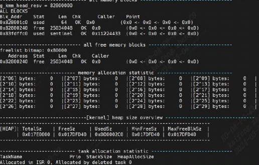
4.3.3.5. mmlk¶
- This command displays memory leak information.
- ::
- –> mmlk
–> memory leak chec—————–All new alloced blocks:—————- –> Blk_Addr Stat Len Chk Caller Point –> ————–New alloced blocks info ends.————- –> —————–All new alloced blocks:—————- –> Blk_Addr Stat Len Chk Caller Point –> ————–New alloced blocks info ends.————- –> k start. –> Add tag 1 when malloc
4.4. Debug Information¶
4.4.1. debug¶
This command displays system debug information, including stack information, the task list, semaphores, and lock wait states.
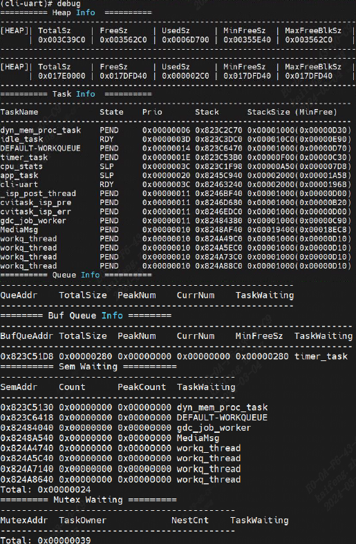